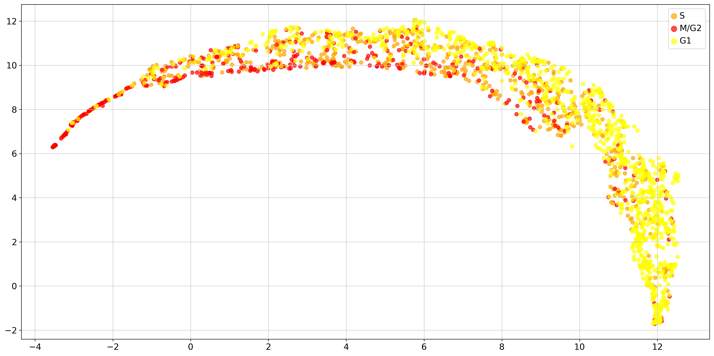
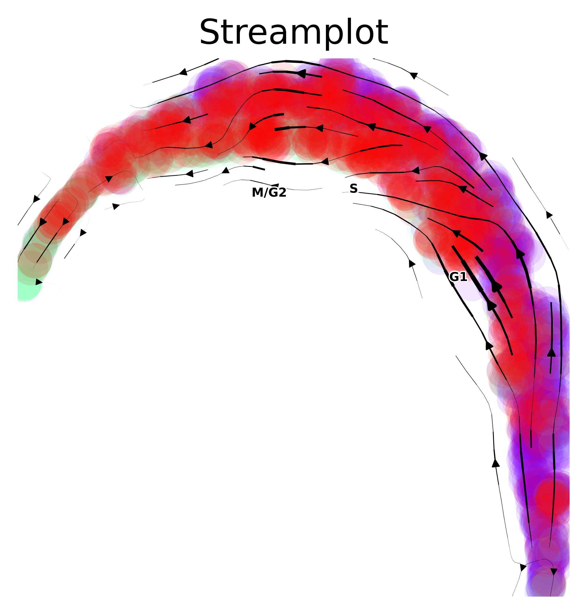
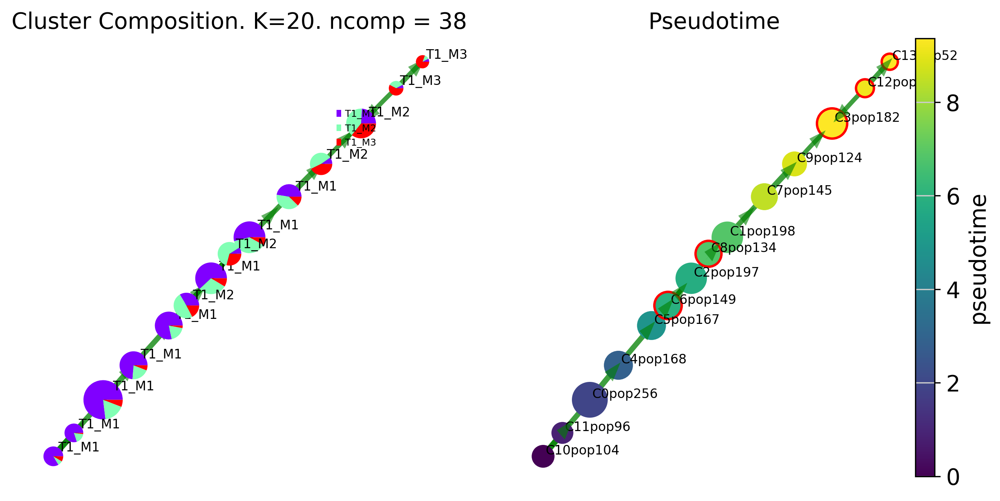

4. Imaging cytometry
FACED imaging cytometry based biophysical features: MCF7 Cell Cycle
import pyVIA.core as via
import pyVIA.datasets_via as datasets_via
import pandas as pd
import numpy as np
import scanpy as sc
import umap
import matplotlib.pyplot as plt
import warnings
warnings.filterwarnings('ignore')
/home/user/anaconda3/envs/Via2Env_py10/lib/python3.10/site-packages/umap/distances.py:1063: NumbaDeprecationWarning: The 'nopython' keyword argument was not supplied to the 'numba.jit' decorator. The implicit default value for this argument is currently False, but it will be changed to True in Numba 0.59.0. See https://numba.readthedocs.io/en/stable/reference/deprecation.html#deprecation-of-object-mode-fall-back-behaviour-when-using-jit for details.
@numba.jit()
/home/user/anaconda3/envs/Via2Env_py10/lib/python3.10/site-packages/umap/distances.py:1071: NumbaDeprecationWarning: The 'nopython' keyword argument was not supplied to the 'numba.jit' decorator. The implicit default value for this argument is currently False, but it will be changed to True in Numba 0.59.0. See https://numba.readthedocs.io/en/stable/reference/deprecation.html#deprecation-of-object-mode-fall-back-behaviour-when-using-jit for details.
@numba.jit()
/home/user/anaconda3/envs/Via2Env_py10/lib/python3.10/site-packages/umap/distances.py:1086: NumbaDeprecationWarning: The 'nopython' keyword argument was not supplied to the 'numba.jit' decorator. The implicit default value for this argument is currently False, but it will be changed to True in Numba 0.59.0. See https://numba.readthedocs.io/en/stable/reference/deprecation.html#deprecation-of-object-mode-fall-back-behaviour-when-using-jit for details.
@numba.jit()
/home/user/anaconda3/envs/Via2Env_py10/lib/python3.10/site-packages/phate/__init__.py
/home/user/anaconda3/envs/Via2Env_py10/lib/python3.10/site-packages/umap/umap_.py:660: NumbaDeprecationWarning: The 'nopython' keyword argument was not supplied to the 'numba.jit' decorator. The implicit default value for this argument is currently False, but it will be changed to True in Numba 0.59.0. See https://numba.readthedocs.io/en/stable/reference/deprecation.html#deprecation-of-object-mode-fall-back-behaviour-when-using-jit for details.
@numba.jit()
Load data
Load the data using the function: datasets_via.cell_cycle_cyto_data(foldername=’./’) OR download the data from github The foldername can be changed to the path you want tp save the files for features and labels the feature matrix and known phase labels. M1 denotes G1 phase, M2 denotes S phase and M3 denotes M/G2 phase
ad = datasets_via.cell_cycle_cyto_data(foldername="/home/user/Trajectory/Datasets/FACED/tests/")
#Download from github datasets
#df=pd.read_csv('/home/user/Trajectory/Datasets/FACED/mcf7_38features.csv')
#df = df.drop('Unnamed: 0', 1)
#true_label = pd.read_csv('/home/user/Trajectory/Datasets/FACED/mcf7_phases.csv')
#true_label = list(true_label['phase'].values.flatten())
#print('There are ', len(true_label), 'MCF7 cells and ', df.shape[1], 'features')
#ad = sc.AnnData(df)
#ad.var_names = df.columns
AnnData object with n_obs × n_vars = 2036 × 38
obs: 'cell_cycle_phase'
true_label = [i for i in ad.obs['cell_cycle_phase']]
#normalize features
sc.pp.scale(ad)
sc.tl.pca(ad, svd_solver='arpack')
# Weight the top features (ranked by Mutual Information and Random Forest Classifier)
X_in = ad.X
df_X = pd.DataFrame(X_in)
df_X.columns = [i for i in ad.var_names]
df_X['Area'] = df_X['Area'] * 3
df_X['Dry Mass'] = df_X['Dry Mass'] * 3
df_X['Volume'] = df_X['Volume'] * 20
X_in = df_X.values
ad = sc.AnnData(df_X)
#apply PCA
sc.tl.pca(ad, svd_solver='arpack')
ad.var_names = df_X.columns
f, ax = plt.subplots(figsize = [20,10])
embedding = umap.UMAP().fit_transform(ad.obsm['X_pca'][:, 0:20])
#phate_op = phate.PHATE()
# embedding = phate_op.fit_transform(X_in)
cell_dict = {'T1_M1': 'yellow', 'T2_M1': 'yellowgreen', 'T1_M2': 'orange', 'T2_M2': 'darkgreen', 'T1_M3': 'red',
'T2_M3': 'blue'}
cell_phase_dict = {'T1_M1': 'G1', 'T2_M1': 'G1', 'T1_M2': 'S', 'T2_M2': 'S', 'T1_M3': 'M/G2', 'T2_M3': 'M/G2'}
for key in list(set(true_label)): # ['T1_M1', 'T2_M1','T1_M2', 'T2_M2','T1_M3', 'T2_M3']:
loc = np.where(np.asarray(true_label) == key)[0]
ax.scatter(embedding[loc, 0], embedding[loc, 1], c=cell_dict[key], alpha=.7, label=cell_phase_dict[key])
plt.legend(markerscale=1.5, fontsize=14)
plt.show()
true_label = [cell_phase_dict[i] for i in true_label]

Run VIA
knn=20
jac_std_global = 0.5
random_seed = 1
root_user = ['G1']
v0 = via.VIA(X_in, true_label, jac_std_global=jac_std_global, dist_std_local=1, knn=knn,
too_big_factor=0.3, root_user=root_user, dataset='group', random_seed=random_seed,
is_coarse=True, preserve_disconnected=True, preserve_disconnected_after_pruning=True,
pseudotime_threshold_TS=40)
v0.run_VIA()
2023-09-14 18:10:27.019847 Running VIA over input data of 2036 (samples) x 38 (features)
2023-09-14 18:10:27.019989 Knngraph has 20 neighbors
2023-09-14 18:10:28.166186 Finished global pruning of 20-knn graph used for clustering at level of 0.5. Kept 65.1 % of edges.
2023-09-14 18:10:28.185627 Number of connected components used for clustergraph is 1
2023-09-14 18:10:28.301168 Commencing community detection
2023-09-14 18:10:28.335607 Finished running Leiden algorithm. Found 16 clusters.
2023-09-14 18:10:28.337110 Merging 2 very small clusters (<10)
2023-09-14 18:10:28.337692 Finished detecting communities. Found 14 communities
2023-09-14 18:10:28.337854 Making cluster graph. Global cluster graph pruning level: 0.15
2023-09-14 18:10:28.345567 Graph has 1 connected components before pruning
2023-09-14 18:10:28.347815 Graph has 1 connected components after pruning
2023-09-14 18:10:28.348067 Graph has 1 connected components after reconnecting
2023-09-14 18:10:28.348869 0.0% links trimmed from local pruning relative to start
2023-09-14 18:10:28.348892 53.1% links trimmed from global pruning relative to start
2023-09-14 18:10:28.352084 Starting make edgebundle viagraph...
2023-09-14 18:10:28.352111 Make via clustergraph edgebundle
2023-09-14 18:10:30.584213 Hammer dims: Nodes shape: (14, 2) Edges shape: (30, 3)
2023-09-14 18:10:30.587253 component number 0 out of [0]
2023-09-14 18:10:30.592549\group root method
2023-09-14 18:10:30.592620\setting a dummy root
2023-09-14 18:10:30.600920 New root is 0 and majority T1_M1
2023-09-14 18:10:30.603858 New root is 7 and majority T1_M1
2023-09-14 18:10:30.605004 New root is 10 and majority T1_M1
2023-09-14 18:10:30.606037 Computing lazy-teleporting expected hitting times
2023-09-14 18:10:31.340711 Identifying terminal clusters corresponding to unique lineages...
2023-09-14 18:10:31.340990 Closeness:[0, 3, 10, 11, 12, 13]
2023-09-14 18:10:31.341035 Betweenness:[0, 3, 6, 8, 10, 11, 12, 13]
2023-09-14 18:10:31.341073 Out Degree:[0, 3, 4, 6, 8, 9, 11, 13]
remove the [0:2] just using to speed up testing
remove the [0:2] just using to speed up testing
remove the [0:2] just using to speed up testing
remove the [0:2] just using to speed up testing
remove the [0:2] just using to speed up testing
remove the [0:2] just using to speed up testing
2023-09-14 18:10:31.342791 Terminal clusters corresponding to unique lineages in this component are [3, 6, 8, 12, 13]
2023-09-14 18:10:31.561277 From root 10, the Terminal state 3 is reached 650 times.
2023-09-14 18:10:31.818140 From root 10, the Terminal state 6 is reached 482 times.
2023-09-14 18:10:32.054292 From root 10, the Terminal state 8 is reached 398 times.
2023-09-14 18:10:32.273561 From root 10, the Terminal state 12 is reached 650 times.
2023-09-14 18:10:32.499249 From root 10, the Terminal state 13 is reached 650 times.
2023-09-14 18:10:32.533811 Terminal clusters corresponding to unique lineages are {3: 'T1_M2', 6: 'T1_M2', 8: 'T1_M2', 12: 'T1_M3', 13: 'T1_M3'}
2023-09-14 18:10:32.533898 Begin projection of pseudotime and lineage likelihood
2023-09-14 18:10:32.897085 Graph has 1 connected components before pruning
2023-09-14 18:10:32.899892 Graph has 1 connected components after pruning
2023-09-14 18:10:32.900125 Graph has 1 connected components after reconnecting
2023-09-14 18:10:32.900910 13.3% links trimmed from local pruning relative to start
2023-09-14 18:10:32.900947 53.3% links trimmed from global pruning relative to start
2023-09-14 18:10:32.904238 Start making edgebundle milestone...
2023-09-14 18:10:32.911342 Time elapsed 5.5 seconds
If you would like a finer grained version of VIA to get smaller clusters by 1) increasing the resolution parameter (e.g. to 2), lowering knn or lowering jac_std_global (with typical values between 0-1, with smaller values closer to zero resulting in more small clusters)
Visualize output
via.via_streamplot(via_object=v0,embedding=embedding, scatter_size=200, scatter_alpha=0.1, density_grid=.5, density_stream=1, smooth_transition=1) #you can choose to use either v1 or v0 as the input for the streamplot
plt.show()

fig, ax, ax2= via.draw_piechart_graph(via_object=v0, cmap='viridis', ax_text=True, alpha_edge=0.5, linewidth_edge=1.5, edge_color='green', headwidth_arrow=0.2)
fig.set_size_inches(10,5)

via.draw_trajectory_gams(via_object=v0, embedding=embedding)
plt.show()
100% (11 of 11) |########################| Elapsed Time: 0:00:00 Time: 0:00:00
100% (11 of 11) |########################| Elapsed Time: 0:00:00 Time: 0:00:00
100% (11 of 11) |########################| Elapsed Time: 0:00:00 Time: 0:00:00
100% (11 of 11) |########################| Elapsed Time: 0:00:00 Time: 0:00:00
100% (11 of 11) |########################| Elapsed Time: 0:00:00 Time: 0:00:00
100% (11 of 11) |########################| Elapsed Time: 0:00:00 Time: 0:00:00
100% (11 of 11) |########################| Elapsed Time: 0:00:00 Time: 0:00:00
100% (11 of 11) |########################| Elapsed Time: 0:00:00 Time: 0:00:00
100% (11 of 11) |########################| Elapsed Time: 0:00:00 Time: 0:00:00
100% (11 of 11) |########################| Elapsed Time: 0:00:00 Time: 0:00:00
100% (11 of 11) |########################| Elapsed Time: 0:00:00 Time: 0:00:00
100% (11 of 11) |########################| Elapsed Time: 0:00:00 Time: 0:00:00
100% (11 of 11) |########################| Elapsed Time: 0:00:00 Time: 0:00:00
100% (11 of 11) |########################| Elapsed Time: 0:00:00 Time: 0:00:00
100% (11 of 11) |########################| Elapsed Time: 0:00:00 Time: 0:00:00
100% (11 of 11) |########################| Elapsed Time: 0:00:00 Time: 0:00:00
100% (11 of 11) |########################| Elapsed Time: 0:00:00 Time: 0:00:00
100% (11 of 11) |########################| Elapsed Time: 0:00:00 Time: 0:00:00
100% (11 of 11) |########################| Elapsed Time: 0:00:00 Time: 0:00:00
100% (11 of 11) |########################| Elapsed Time: 0:00:00 Time: 0:00:00
100% (11 of 11) |########################| Elapsed Time: 0:00:00 Time: 0:00:00
100% (11 of 11) |########################| Elapsed Time: 0:00:00 Time: 0:00:00
100% (11 of 11) |########################| Elapsed Time: 0:00:00 Time: 0:00:00
100% (11 of 11) |########################| Elapsed Time: 0:00:00 Time: 0:00:00
100% (11 of 11) |########################| Elapsed Time: 0:00:00 Time: 0:00:00
100% (11 of 11) |########################| Elapsed Time: 0:00:00 Time: 0:00:00
100% (11 of 11) |########################| Elapsed Time: 0:00:00 Time: 0:00:00
100% (11 of 11) |########################| Elapsed Time: 0:00:00 Time: 0:00:00
100% (11 of 11) |########################| Elapsed Time: 0:00:00 Time: 0:00:00
100% (11 of 11) |########################| Elapsed Time: 0:00:00 Time: 0:00:00
2023-09-14 17:15:49.573613 Super cluster 3 is a super terminal with sub_terminal cluster 3
2023-09-14 17:15:49.573893 Super cluster 6 is a super terminal with sub_terminal cluster 6
2023-09-14 17:15:49.573914 Super cluster 8 is a super terminal with sub_terminal cluster 8
2023-09-14 17:15:49.573943 Super cluster 12 is a super terminal with sub_terminal cluster 12
2023-09-14 17:15:49.573959 Super cluster 13 is a super terminal with sub_terminal cluster 13
Physical Feature Dynamics
all_cols = ['Area', 'Volume', 'Dry Mass', 'Circularity', 'Orientation', 'Phase Entropy Skewness',
'Phase Fiber Radial Distribution', 'Eccentricity', 'AspectRatio', 'Dry Mass Density', 'Dry Mass var',
'Dry Mass Skewness', 'Peak Phase', 'Phase Var', 'Phase Skewness', 'Phase Kurtosis', 'Phase Range',
'Phase Min', 'Phase Centroid Displacement', 'Phase STD Mean', 'Phase STD Variance',
'Phase STD Skewness', 'Phase STD Kurtosis', 'Phase STD Centroid Displacement',
'Phase STD Radial Distribution', 'Phase Entropy Mean', 'Phase Entropy Var', 'Phase Entropy Kurtosis',
'Phase Entropy Centroid Displacement', 'Phase Entropy Radial Distribution',
'Phase Fiber Centroid Displacement', 'Phase Fiber Pixel >Upper Percentile', 'Phase Fiber Pixel >Median',
'Mean Phase Arrangement', 'Phase Arrangement Var', 'Phase Arrangement Skewness',
'Phase Orientation Var', 'Phase Orientation Kurtosis']
subset_ = pd.DataFrame(ad[:,all_cols[0:8]].X, columns=all_cols[0:8])
print(subset_.shape)
fig,axs =via.get_gene_expression(via_object=v0, gene_exp=subset_, marker_lineages=[13,3])
subset_ = pd.DataFrame(ad[:, ['Dry Mass Density','Phase Entropy Radial Distribution']].X, columns= ['Dry Mass Density','Phase Entropy Radial Distribution'])
fig,axs =via.get_gene_expression(via_object=v0, gene_exp=subset_,marker_lineages=[13])
plt.show()
(2036, 8)